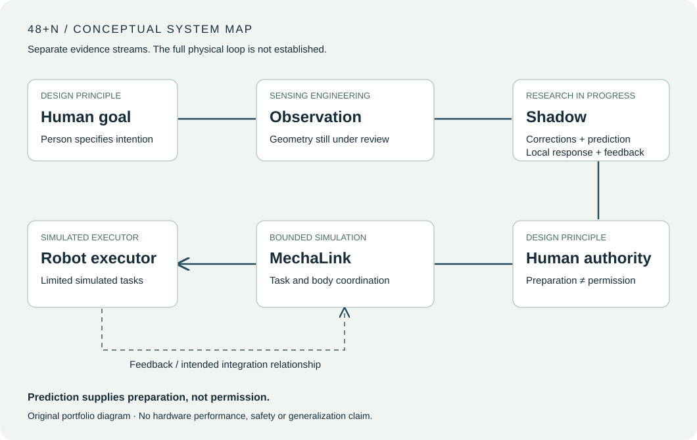

Camera acquisition
and interfaces
Acquired real RGB-D observations with D455/D435i cameras and exercised frame, timing and software interfaces.
Independent geometric and anatomical accuracy remain unqualified.
Research in progress · Public portfolio released 28 October 2026. Repository and website links verified. Offline reading edition.
Skip to contentHuman-centered embodied intelligence
Human specifies the goal.
Shadow prepares.
MechaLink coordinates embodied realization.
From real sensing and recorded-motion evaluation to bounded robot simulation: how can people remain in charge when predictions are uncertain and bodies have different capabilities?
Explore the engineeringRead the research brief →Independent research by @ANDreaLiuz. Research in progress. The engineering foundation spans real camera software, recorded-data prediction and controlled SO-101 simulation. Complete physical-loop benefit and comparative method superiority remain open.
Evidence-backed engineering work provides a concrete foundation for the research. The domains below describe what has been exercised and the boundary of each result.
Acquired real RGB-D observations with D455/D435i cameras and exercised frame, timing and software interfaces.
Independent geometric and anatomical accuracy remain unqualified.
Evaluated GRU-based motion forecasts against simple baselines using recorded motion.
These are measured-reference comparisons, with input availability and baseline choice affecting interpretation.
Exercised ordinary SO-101 control in MuJoCo through grasp, lift, transport, placement and retreat.
Rendered RGB-D re-observation informed updated target estimates in controlled tabletop cases.
Known scene geometry and simulator ground-truth contact checks still apply.
A limited native camera-to-prediction-to-software-consumer path has also been recorded. Generated operator-command tests in SO-101 MuJoCo exercised bounded correction, HOLD and simulated settling under known scene assumptions. HOLD is not instantaneous; these software and simulation checks establish neither real-time operation, human-study benefit nor physical-robot advantage.
Prediction supplies preparation, not permission. Shadow studies ongoing low-level human corrections, prediction, robot-local response and feedback; MechaLink concerns task goals and embodiment coordination. Control must still be verified, authorized and fed back.

Shadow studies ongoing low-level human–robot coordination: human corrections, short-horizon prediction, robot-local response and feedback to the operator. Prediction is one component; the full physical loop remains unestablished.
Recorded-motion evaluation and software integration provide the engineering base. Effective anticipation and independent measurement validity remain research questions.
Task anchoring, capability and embodiment matching, and coordination of authorized realization. A task goal is different from the movement used to realize it.
Bounded simulated tasks and visual re-observation provide the engineering base. A distinct high-level method advantage over ordinary baselines remains unproven.
Implemented components make the questions testable. Stronger conclusions require evidence beyond the current development settings.
| Domain | Existing foundation | What still needs validation |
|---|---|---|
| Recorded data | Motion forecasts, baseline comparisons and availability analysis | Independent reference validity, consistent baseline advantage and population generalization. |
| Sensing | Real-device acquisition and software interface checks | Geometric and anatomical accuracy under the intended operating conditions. |
| Simulation | Limited SO-101 pick/place and visual re-observation tasks | Method advantage, broader task conditions and transfer to physical hardware. |
| Physical loop | The sensing, prediction and simulation streams have separate evidence | A complete human-to-physical-robot evaluation of applied actions and observed outcomes. |
Real sensing and simulated task execution are useful engineering achievements. They do not, on their own, establish a physical robot benefit or safety guarantee.
I independently conceived, designed, implemented and evaluated this research, including data collection, experimental operation and interpretation. No other student or faculty researcher co-developed it. MuJoCo and existing sensing and numerical tools provide established capabilities. Upstream SO-101 resource attribution distinguishes TheRobotStudio designs, MuJoCo Menagerie and LeRobot ecosystem resources from the applicant's work.
The portfolio text and original diagrams were prepared with AI assistance. No private research implementation, participant record or third-party robot asset is redistributed. Robotics manuscripts are in preparation; submission and acceptance are not claimed.